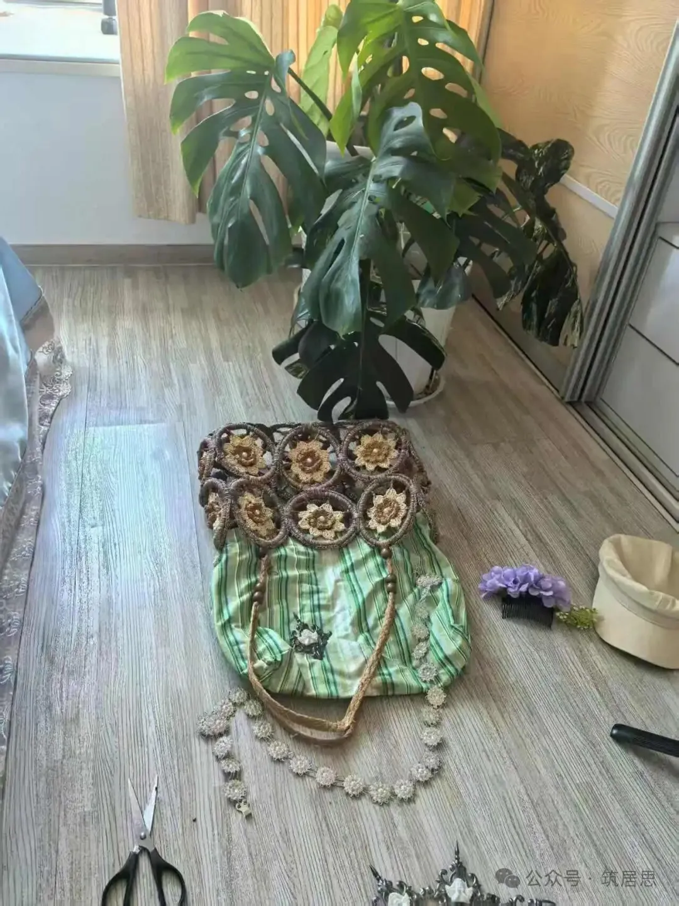
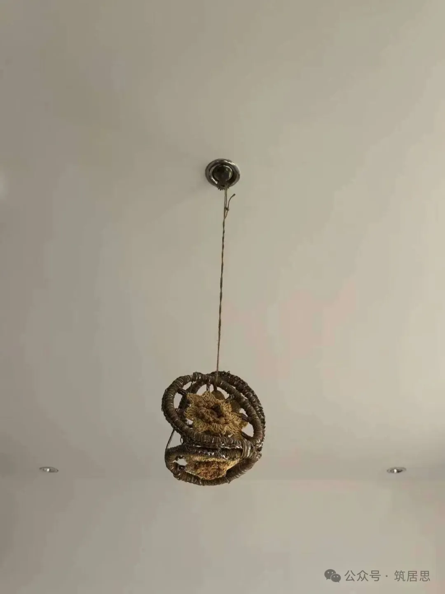
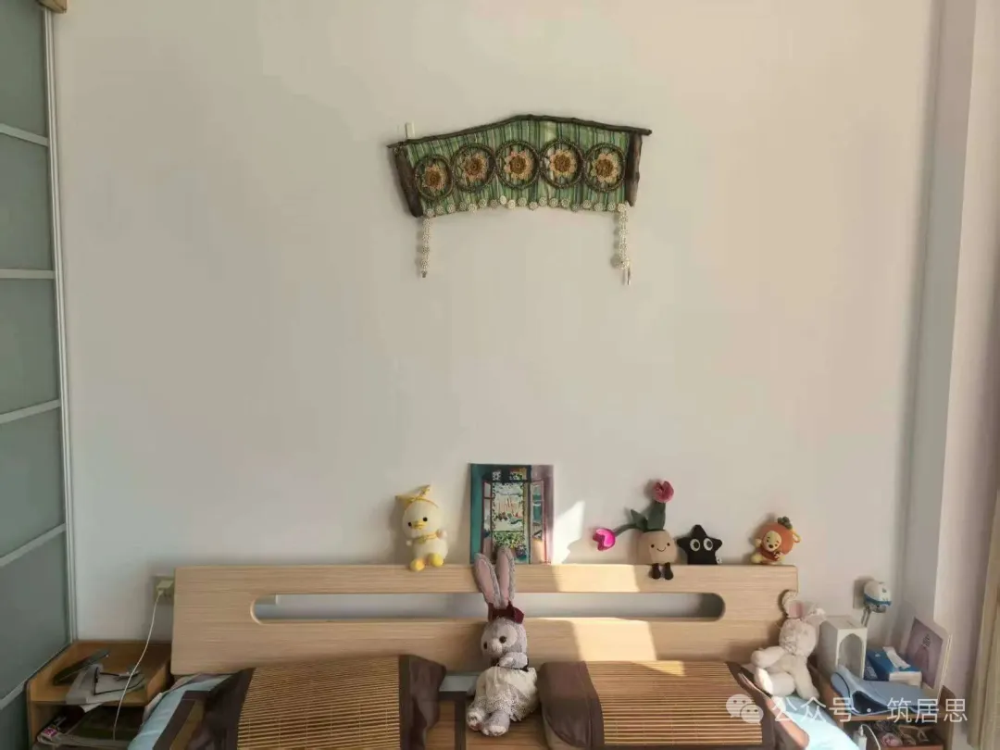

西双版纳的水草绳编包：从担心断带到一次拆解
一件在集市上一眼相中的包，后来成了重新理解「连接」与「栖居」的实物题目。
几年前，我仍习惯用图纸上宏大的秩序想象「创造」，迷信直线、崭新与一次性完成。我也和许多人一样，被快时尚填满衣柜，心里却仍觉得空。后来我长期在界面与数据产品语境里工作，终日面对像素与流程——那种「离地」反而让我更渴望真实的触感：材料、手工与可反复琢磨的连接。
这颗种子其实早就在：从小沉迷手工、跟着节目与改造类内容长大的人，终究会回到「手边」。
集市上的那只包
年初在西双版纳的集市上，我一眼看中了一只水草绳编的民族风包。它承载了我对那片风景的好奇与喜欢；我也没有在别处见过同款，却在集市新开的第一天就把它带回家。
它开始破损之后，我既舍不得扔，又忍不住操心：背带会不会断？容量那么大，若真在半路上散开怎么办？一旦这种「操心」坐实，心里的创作冲动反而被顶起来——于是在一个早晨，我选择了拆除，而不是用胶水糊弄过去。
剪刀与剖面
拿起剪刀时，我像读建筑剖面一样拆解它：先剪除连接处，它们像模数一样，把整体拆成可重新组合的最小单元；再重新思考「如何连接」——也就是重新谈判人与旧物的关系。当我在镜子里看见那件怪诞却有力的新形态时，海德格尔所说的「栖居」突然变得具体。
衣服，是身体居住的最小建筑。若能修缮老房子，为何不能修缮旧衣？若能通过改造空间安顿身体，为何不能通过改造旧物安顿与之共处的自己？我读《存在与时间》时关于「上手状态」与「现成状态」的困惑，在那一天落到了实处。
于是有了「筑居思」这个名字：放下只画宏大蓝图的笔，拿起修补微小裂痕的心；不再只追求无瑕的新，而愿意迷恋有故事的旧。


